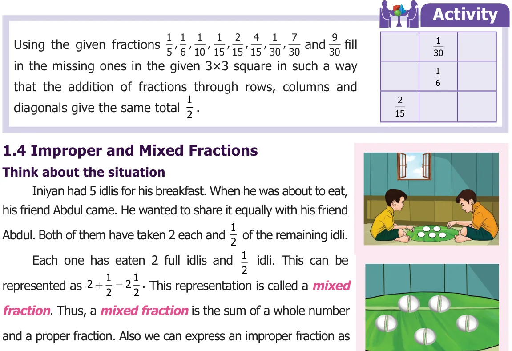
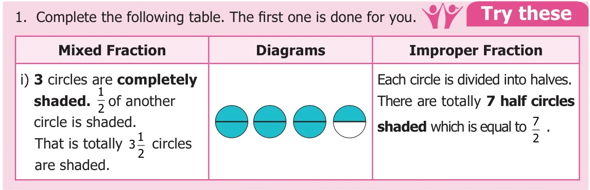
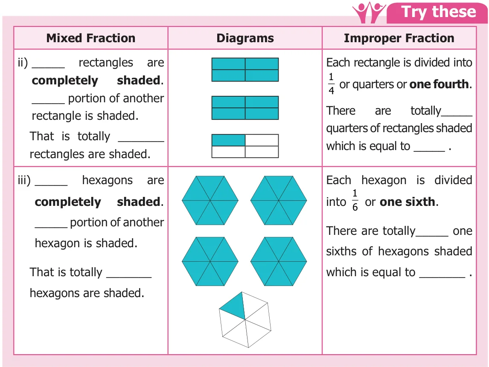
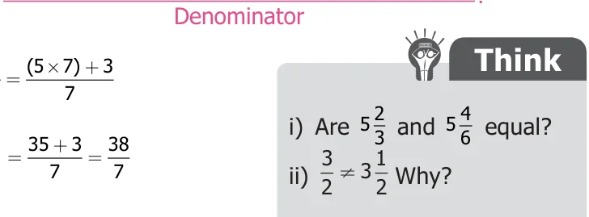
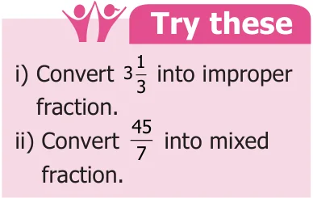

Think about the situation
Iniyan had 5 idlis for his breakfast. When he was about to eat, his friend Abdul came. He wanted to share it equally with his friend Abdul. Both of them have taken 2 each and \(\frac{1}{2}\) of the remaining idli.
Each one has eaten 2 full idlis and \(\frac{1}{2}\) idli. This can be represented as \(2 + \frac{1}{2} = 2\frac{1}{2}\). This representation is called a mixed fraction. Thus, a mixed fraction is the sum of a whole number and a proper fraction. Also we can express an improper fraction as a mixed fraction by dividing the numerator by denominator to get quotient and remainder. Thus, any mixed fraction can be written as
Another way to share these idlis is as follows: Now can you see how many halves are there in 5 idlis. There are 10 halves. If we share these \(\frac{1}{2}\) idlis each time, then Iniyan and Abdul has eaten 5 halves each. That is \(\frac{1}{2} + \frac{1}{2} + \frac{1}{2} + \frac{1}{2} + \frac{1}{2} = \frac{5}{2}\) which is same as \(2\frac{1}{2} = 2 + \frac{1}{2} = \frac{(2 \times 2) + 1}{2} = \frac{5}{2}\). Thus, any improper fraction can be written as mixed fraction as follows
$$\text{Improper fraction} = \frac{(\text{Whole number} \times \text{Denominator}) + \text{Numerator}}{\text{Denominator}}$$


Example 10 Convert \(5\frac{3}{7}\) into an improper fraction.
Solution
$$\text{Improper fraction} = \frac{(\text{Whole number} \times \text{Denominator}) + \text{Numerator}}{\text{Denominator}}$$ $$5\frac{3}{7} = \frac{(5 \times 7) + 3}{7} = \frac{35 + 3}{7} = \frac{38}{7}$$
Example 11 Convert \(\frac{17}{3}\) into a mixed fraction.
Solution
